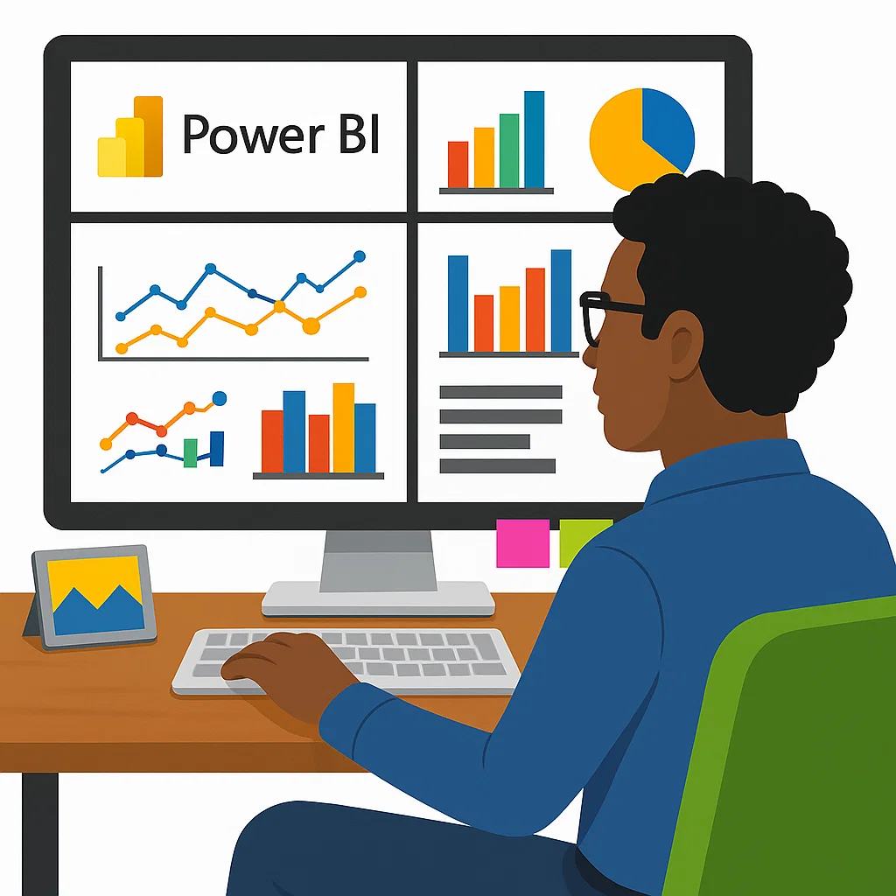
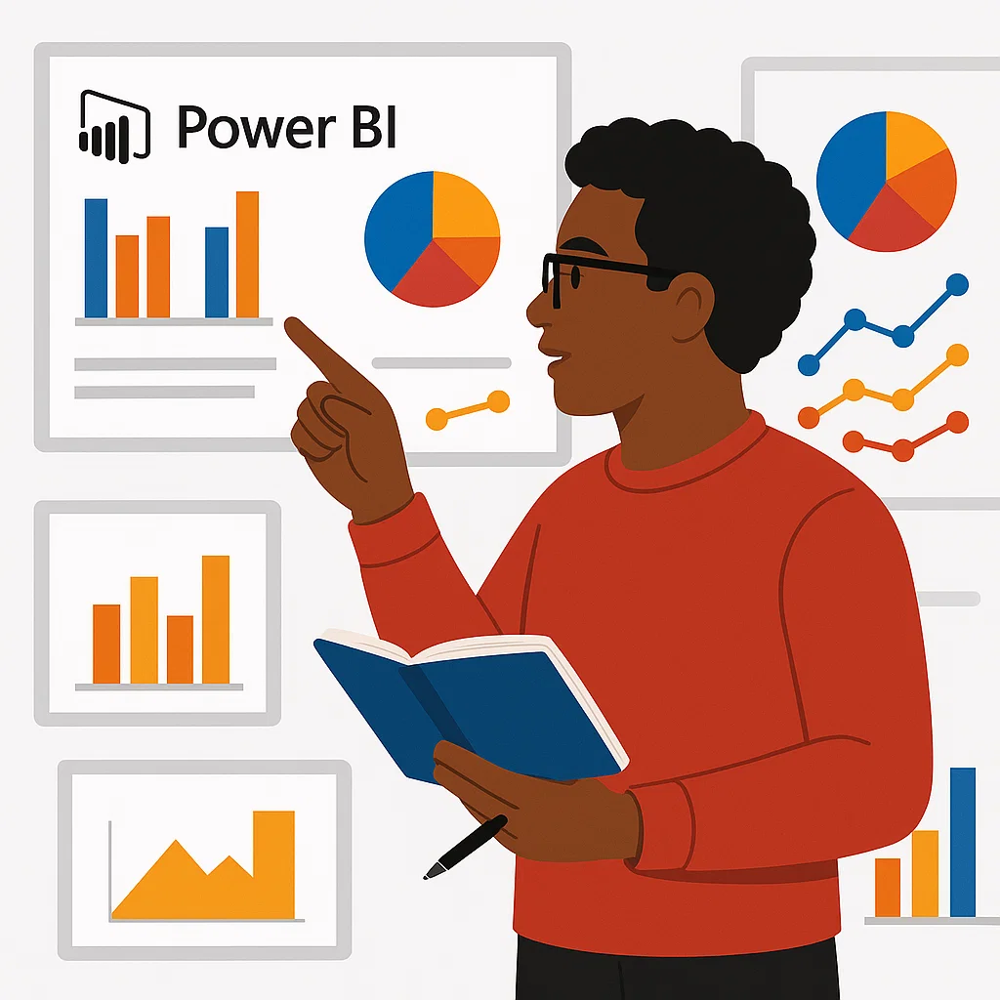

Je suis un passionné de data, orienté solutions et curieux par nature.
Voici les outils et technologies que je maîtrise :
Technos : Python, Excel, API INSEE
Nettoyage et enrichissement automatique d’une base client via l’API INSEE. Double version Python + Excel pour fiabiliser les SIRETs et adapter l’outil au niveau technique des utilisateurs.

Technos : Excel VBA, Outlook
Un clic dans Excel pour générer un email de relance avec pièce jointe. Un outil simple et puissant qui fait gagner un temps fou aux équipes ADV.

Technos : Excel VBA, Power BI
Pilotage visuel des commandes à relancer : délais, statuts, suivi des retards. Un dashboard clair, connecté à Excel, pensé pour les managers.
Technos : Excel, Power BI
Suivi temps réel des mails reçus/traités via un tableau de bord connecté à Outlook. Typologie des demandes, charge de travail et qualité de service en un clin d’œil.
Envie de collaborer ? Envoie-moi un message !